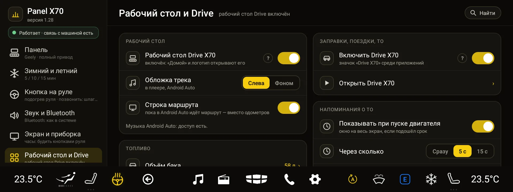
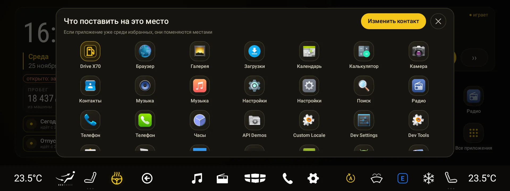

Ставьте поверх, удалять ничего не нужно. Если Panel уже настроена, мастера не будет. Один раз появится окно «Новое: свой рабочий стол» — согласитесь или оставьте штатный.
Почему с флешки, а не APKФлешка заодно выдаёт доступ к музыке Android Auto. Из APK его на этом ГУ не включить.
Если стоят старые приложения
«Полоса BX70» — удалите обязательно: две панели не уживутся.
steering3 — удалите, если включаете «Треки с руля в Android Auto».
WheelHeat — удалите, если назначаете действие кнопке руля, иначе сработают оба.
Экран X70 — пока стоит, кнопкой питания управляет он.
Bluetooth X70, Перезагрузка ГУ, Back Button больше не нужны: всё это есть в Panel.
Android Auto
Panel работает вместе с Open Headunit (раньше Headunit Revived). Другие приложения Android Auto она не видит.
1. В Open Headunit → Настройки
Аудио → Текущий трек AA в медиасессииназвание, исполнитель, обложка, кнопка ▶
Названия из Open Headunit 4.1.0-beta1. В другой версии разделы могут называться чуть иначе: ищите по названию самой настройки.
2. В Panel X70 → Настройки
Рабочий стол и Driveвнизу должно быть «Музыка Android Auto: доступ есть». Нет — поставьте Panel с флешки ещё раз
Рабочий стол Drive X70Drive включится вместе с ним
Показывать новый трекЗвук и Bluetooth
Подсказки маршрута AAЗвук и Bluetooth
Треки с руля в Android Autoпо желанию; сначала удалите steering3
Рабочий стол
Настройки → Рабочий стол и Drive → «Рабочий стол Drive X70».
Android спросит, что открывать. Делайте, как подсказывает плашка сверху: обычно Drive X70, потом «Всегда».
Panel проверит. Запомнился не тот стол — предложит «Выбрать ещё раз».
Выключили переключатель — вернулся штатный. Данные Drive при этом не стираются.
Контакт вместо приложения
Удержите место → «＋ Контакт» → номер и имя. Имя можно взять из книги ГУ. Нажатие — звонок.

Здесь же обложка слева или фоном, строка маршрута, напоминания и топливо.

Удержали значок: что поставить на это место.
Кнопки панели
Нажатие
Удержание
Окно температуры
—
Штатный климат
Окно климата
Уровень подогрева по кругу
Окно с уровнями
Подогрев руля
На 5, 10 или 15 минут
Назад
—
Рабочий стол. Открыто окно панели — закрыть его
Центр управления
Старт-стоп, только полный привод
—
Обогрев форсунок
—
Тема приборки: S, C, E, D
—
Зима: окно режима. Лето: включить или выключить
—
Нота, радио, трубка и шестерёнка — как в штатной панели. Подогревы работают только при заведённом двигателе, иначе значки серые.
Кнопка питания: экран с часами
Штатно громкость и треки на руле будят экран. Настройки → Экран и приборка → «Не будить кнопками руля» — и не будут. Разбудить: коснуться экрана или нажать питание. Задняя передача и звонок включают экран сразу.
Зима и лето
Одна кнопка на панели. Что она делает, выбираете в настройках: Зимний и летний → Сезон.
Пишется сама на ГУ: PanelX70/settings.json, заправки — в drive.json. После установки начисто Panel предложит вернуть.
Багажник
Кнопка на панели работает только с заводским электроприводом, по умолчанию выключена.
Чего Panel не делает
Не меняет системные файлы ГУ.
Не выходит в интернет: такого разрешения у неё нет.
Не читает VIN и никуда ничего не отправляет.
Окна двигает и звонит только по вашему нажатию — или в режиме «после каждого пуска», если вы сами его включили.
Если что-то не так
Панель не появилась после установки
Заглушите, дождитесь, пока погаснет экран, и заведите снова: панель создаётся при загрузке ГУ. Проверьте, что включено «Показывать Panel X70» и не стоит другая панель.
«Домой» открывает штатный рабочий стол
Настройки → Рабочий стол и Drive → «Выбрать ещё раз» → Drive X70 → «Всегда». Не помогло — Сервис → «Сбросить выбор рабочего стола».
На столе нет трека и обложки Android Auto
Включите в Open Headunit «Текущий трек AA в медиасессии» и сохраните. Если в настройках Panel «нет доступа» — поставьте её с флешки ещё раз.
Нет подсказок маршрута
Включите «Уведомления навигации» в Open Headunit и «Подсказки маршрута AA» в Panel. На экране самого Android Auto плашки нет нарочно: там и так карта.
Трек перескакивает через один
Кнопки руля обрабатывают двое. Удалите steering3. Если его нет — в Open Headunit поставьте «Передача кнопок мультимедиа в Android Auto» на «Всегда».
Кнопка руля не звонит
Телефон должен быть подключён к ГУ по Bluetooth, даже если Android Auto идёт по проводу.
Время ГУ берёт у машины, а дата часто сбита. Укажите сегодняшнюю: Рабочий стол и Drive → «Сегодняшняя дата». Часы ГУ не меняются.
Окно не закрылось в конце летнего режима
Если сдвинулось, но не закрылось, могла сработать защита от защемления. Проверьте, что ему ничего не мешает.
Panel сама выключилась
После трёх сбоев подряд она возвращает штатную панель. Включить: Настройки → Панель → «Показывать Panel X70». Пришлите, пожалуйста, отчёт.
Не помоглоНастройки → Сервис → «Отчёт о работе панели» → «Сохранить отчёт» со вставленной флешкой. Пришлите его в чат клуба.
Удаление
Совсем
Распакуйте PanelX70-remove.zip в корень флешки и вставьте её. Готово, когда откроются штатные настройки ГУ. Настройки Panel стёрты, копии в папке PanelX70 остаются.
Вернуть штатную панель на время
Настройки → Панель → выключить «Показывать Panel X70». Не добраться до настроек — положите на флешку пустой файл polosa_off и вставьте её.
Версии
1.28 — рабочий стол, Drive X70, Android Auto, летний режим
Свой рабочий стол и Drive X70: заправки, одометры с моточасами, напоминания о ТО.
Android Auto: трек с обложкой, «Новый трек», подсказки маршрута, треки с руля.
Летний режим, окна по очереди.
Кнопка руля: нажатие, долгое и двойное, действие «Позвонить».
Громкость и источник звука при запуске, музыка не приглушается на задней.
Новый вид окон, светлая тема, новые настройки, мастер, копия настроек.
Исправлено: режимы не перезапускаются на старт-стопе, зимний режим переживает перезагрузку ГУ.
Три сбоя подряд — Panel сама вернёт штатную панель.
1.25 — пустая кнопка руля открывает приложение
В настройках, в разделе «Пустая кнопка на руле», новый пункт «Открыть приложение» и кнопка «Выбрать приложение» со списком всех установленных.
Нажатие на руле открывает выбранное приложение, как значок. По просьбе участника клуба.
1.24 — логотип Geely или Belgee
В настройках, в разделе «Панель», можно выбрать логотип в центре панели: Geely (как было) или Belgee.
Логотип работает как раньше: нажатие — рабочий стол, долгое нажатие — центр управления.
1.23 — форсунки и заднее стекло в зимнем режиме
В настройках зимнего режима две новые галочки: форсунки омывателя и заднее стекло. По окончании режим выключает их, только если включал сам.
При заглушенном двигателе кнопки подогревов серые и не нажимаются, как кнопки климата.
Отсчёт таймера руля больше не пропадает сам. Если всё же пропадёт — причина видна в настройках, в «Диагностике».
1.22 — старт-стоп на пустой кнопке руля
Для полного привода: пустая кнопка руля переключает старт-стоп той же командой, что значок на панели.
После нажатия на экране пишется, включён он или выключен, по ответу машины.
1.21 — «Заставка» и «Отключить экран» в центре управления
Две новые плитки: заставка с часами и чёрный экран с подсветкой на минимум.
Если стоит Экран X70, кнопкой питания управляет он.
1.20 — окно климата
Долгое нажатие на значок обдува: весь климат в одном окне, включая AQS.
1.19 — логотип закрывает окна
При открытом центре управления нажатие на логотип только закрывает его, Android Auto не пропадает.
1.18 — экран с часами не будится рулём
Галочка в разделе «Экран с часами».
1.15–1.17 — напоминание о телефоне, Bluetooth-музыка
«Не забудьте телефон в салоне» живым голосом.
Автооткрытие Bluetooth-музыки.
1.13–1.14 — Bluetooth после запуска, перезагрузка ГУ, центр управления
Отдельные приложения Bluetooth X70 и Перезагрузка ГУ вошли в Panel X70.
Центр управления по долгому нажатию на логотип.
До 1.13 — сама панель
Новые значки, уровни сидений, окно температуры, подогрев руля с таймером, зимний режим, кнопка «Назад», пустая кнопка руля.
Отдельные приложения, из которых выросла Panel X70. Ставятся так же, флешкой.
Экран X70 0.1
Что делать по кнопке питания: полностью погасить экран (подсветка на минимум) или показать заставку с часами. Кнопки руля не будят. В Panel X70 то же есть плитками в центре управления; если стоят оба, кнопкой питания управляет Экран X70.
Первое приложение: пустая кнопка на руле включает и выключает подогрев руля. С Panel X70 вместе не ставить, если назначаете пустую кнопку там, иначе сработают оба.
Bluetooth после запуска ГУ: всегда включён, всегда выключен, как в системе или спрашивать. В Panel X70 с версии 1.13; если стоят обе, при запуске ГУ работает эта.
Свой рабочий стол: часы, карточка климата, избранное и все приложения сеткой. Пока обычное приложение со своим значком, штатный рабочий стол не заменяет. Дальше не развивается.